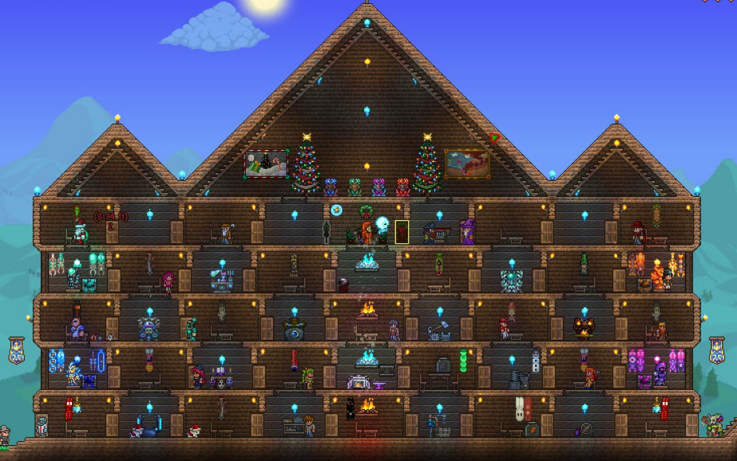

More about Me
Hobbies and Interests
Games I Play
Minecraft
{kind=link}
Built and taken by Wajid Uddin
About
Minecraft is an open world a sandbox video game developed by Mojang Studios.
In Minecraft, players can explore a procedurally generated 3D world in which
they may discover and extract raw materials, craft tools and items, and build
structures and simple machines.Depending on their chosen game mode, players
can fight hostile mobs, as well as cooperate with or compete against other
players in the same world. Game modes include a survival mode, in which players
must acquire resources to build in the world and maintain health) and a creative
mode (where players have unlimited resources and access to flight).
What I Do
Minecraft is a game that i have been playing for over 10 years now. it is a game
for all ages and is still being updated to this day. Usually when i play minecraft
it will always be with a few friends and we would be playing on survival mode but
every now and then i go into creative mode and build random structures like the
ones you see in the pictures.
Terraria
{kind=link}
Built and taken by Wajid Uddin
About
Terraria is an open world action-adventure sandbox game developed by Re-Logic.
In Terraria, gameplay revolves around exploration, building, crafting, combat,
survival and mining, and is playable in both single-player and multiplayer modes.
The game starts in a procedurally generated world, with players starting out with
basic tools and a non-player character (NPC) guide to get them started and bring
their attention to aspects of the game and progression.
What I Do
Terraria is a game that i have been playing for around 7 years. It is a game
for ages 12 and up and it has recently recieved its "Final" update. Every Summer
I will create a new world in Terraria and do a playthrough with either friends or
family. whenever it comes to building housing it is always my job as I have the
most experience and creativity when building them.
Other Images
{kind=link}
{kind=link}
{kind=link}
Shows I Watch
One Piece

About
One Piece is a Japanese anime television series produced by Toei Animation that premiered
on Fuji TV in October 1999. It is based on Eiichiro Oda's manga series of the same name.
The story follows the adventures of Monkey D. Luffy, a boy whose body gained the properties
of rubber after unintentionally eating a Devil Fruit. With his crew of pirates, named the
Straw Hat Pirates, Luffy explores the Grand Line in search of the world's ultimate treasure
known as "One Piece" in order to become the next Pirate King. Since its premiere in Japan,
over 1000 episodes have been aired, and later exported to various countries around the world.
Black Clover

About
Black Clover is a Japanese manga series written and illustrated by Yūki Tabata. It has been
serialized in Shueisha's shōnen manga magazine Weekly Shōnen Jump since February 2015, with
its chapters collected in 32 tankōbon volumes as of April 2022. The story follows Asta, a young
boy born without any magic power. This is unknown to the world he lives in because seemingly
everyone has some sort of magic power. With his fellow mages from the Black Bulls, Asta plans
to become the next Wizard King.
The manga was first adapted into an original video animation produced by Xebec Zwei, released
in 2017. An anime television series adaptation produced by Pierrot aired in Japan on TV Tokyo
from October 2017 to March 2021. An anime film, titled Black Clover: Sword of the Wizard King,
is set to premiere in Japanese theaters and on Netflix in March 2023.
In North America, the manga is licensed for English release by Viz Media, while the anime series
is licensed by Crunchyroll.
Bleach

About
Bleach is a Japanese anime television series based on Tite Kubo's original manga series of the
same name. It was produced by Studio Pierrot and directed by Noriyuki Abe. The series aired on
TV Tokyo from October 2004 to March 2012, spanning 366 episodes. The story follows the adventures
of Ichigo Kurosaki after he obtains the powers of a Soul Reaper (a death personification similar
to the Grim Reaper) from another Soul Reaper, Rukia Kuchiki. His newfound powers force him to take
on the duties of defending humans from evil spirits and guiding departed souls to the afterlife.
In addition to adapting the manga series it is based on, the anime periodically includes original
self-contained storylines and characters not found in the manga.
Viz Media obtained foreign television and home video distribution rights to the Bleach anime in
March 2006. Bleach was broadcast in the United States on Adult Swim from September 2006 to November
2014.
Bleach: Thousand-Year Blood War, a sequel series that covers the manga's final story arc, also
animated by Pierrot and directed by Tomohisa Taguchi, premiered in October 2022.